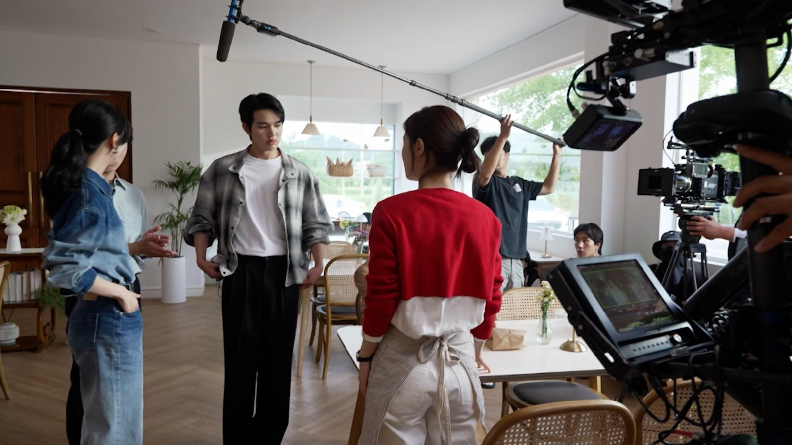
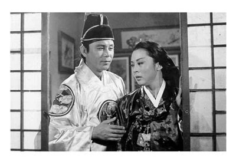

Drama coreano

Drama coreano (em hangul: 한국드라마; romanização revisada: hanguk deurama), também chamado de K-drama ou série de televisão sul-coreana, é a designação dada aos dramas televisivos em língua coreana realizados pela Coreia do Sul. Possui principalmente o formato de minissérie, com características distintas que o diferencia das séries de televisão e das telenovelas feitas no ocidente, sendo contudo semelhante aos dramas televisivos realizados por outros países da Ásia.
Os dramas de origem coreana, historicamente, surgiram influenciados pelas novelas japonesas dos anos de 1950. Apesar da ditadura militar vigente na época e das restrições impostas em relação aos conteúdos, os K-Dramas se tornaram parte essencial das transmissões das diversas outras redes de televisão na qual surgiram posteriormente.
Sua transmissão iniciou-se na década de 1960 e seu formato atual com um número total de capítulos que variam em média de 12 a 24 episódios, iniciou-se nos anos noventa, quando houve uma transformação das séries históricas tradicionais para este formato. Atualmente, tornaram-se extremamente populares ao redor do mundo, em parte devido a propagação da chamada onda coreana, mas sobretudo com provedoras de serviços de transmissão de séries e filmes, oferecendo legendas dos dramas coreanos em diversos idiomas.
Formato
Os dramas coreanos possuem um estilo e linguagem de direção distintos, e em sua maioria, possuem apenas uma temporada, com uma média de 12 a 24 episódios. Contudo, os dramas do tipo histórico (chamado de sageuk) podem ser mais longos, com um número de episódios que podem variar entre 50 a 200 episódios, mas também possuem apenas uma temporada.
Sua transmissão ocorre das 22:00 às 23:00 horas, com episódios sendo exibidos em duas noites consecutivas: segundas e terças, quartas e quintas-feiras e fins de semana. O horário das 19:00 às 20:00 horas, geralmente é reservado para os dramas em formato de telenovela, exibidos de segunda a sexta-feira e que raramente excedem o número de 200 episódios.
História
A transmissão de rádio, incluindo a transmissão de dramas via rádio na Coreia, iniciou-se in 1927 sob o domínio japonês, possuindo em maior parte uma programação em língua japonesa e cerca de 30% em língua coreana. Após a Guerra da Coreia, dramas de rádio como o Cheongsilhongsil (1954) refletiram o clima do país. Em 1956, inicíou-se a transmissão de televisão, com o lançamento de uma estação experimental, a HLKZ-TV, que foi encerrada alguns anos depois devido a um incêndio, ela foi a primeira a exibir um filme na televisão coreana, advinda de uma peça de quinze minutos intitulada The Gate of Heaven (천국의 문; Cheongugui mun). Adicionalmente, o primeiro canal de televisão nacional surgiu no ano de 1961 sob o nome de Korean Broadcasting System (KBS).

A primeira série de televisão exibida no país, foi através da KBS em 1962. Seu concorrente comercial a Tongyang Broadcasting (TBC), adquiriu uma política de programação mais aggressive, e exibiu dramas considerados controversos também. A primeira série histórica, chamada de Gukto manri (국토만리) e dirigida por Kim Jae-hyeong (김재형), retratou a era Goryeo em seu enredo. Na década de 1960, os aparelhos de televisão tinham uma disponibilidade limitada, de modo que os dramas não podiam conquistar uma audiência maior.
Na década de 1970, os aparelhos de televisão começaram a se espalhar entre a população em geral, e os dramas que retratavam figuras históricas dramáticas, passaram para a introdução de heróis nacionais, como seus compatriotas Lee Sun-shin ou o Rei Sejong. As histórias tratavam de sofrimentos pessoais, como a Stepmother (새엄마; Saeeomma) de Kim Soo-hyun, transmitida pela Munhwa Broadcasting Corporation (MBC) em 1972 e 1973. Como a tecnologia e os recursos para a produção dos dramas eram limitados, os canais coreanos não podiam produzir séries de gêneros mais complexos como de ação e ficção científica; Séries estrangeiras e estadunidenses, eram importadas para exibição em seu lugar.
A partir da década de 1980, viu-se uma mudança na televisão coreana, com a chegada da televisão em cores. Os dramas modernos tentavam evocar a nostalgia dos moradores urbanos, representando a vida rural. O primeiro grande sucesso comercial da escritora Kim Soo-hyun, foi com o drama Love and Ambition (사랑과 야망; Saranggwa yamang), exibido na MBC em 1987, e considerado um marco na televisão sul-coreana. Ele obteve um recorde de audiência de 78%. Segundo o jornal The Korea Times, "as ruas ficaram silenciosas no tempo de transmissão do drama como praticamente todos no país, que estavam em casa na frente da TV". O drama histórico de maior destaque da época 500 Years of Joseon (조선왕조500년; Joseonwangjo 500 nyeon), durou oito anos e foi composto por onze séries distintas. Ele foi produzido por Lee Byung-hoon, que mais tarde dirigiu um dos maiores successes internacionais do drama coreano, Dae Jang Geum de 2003.
A década de 1990 trouxe outro marco importante para a televisão sul-coreana. À medida que a tecnologia se desenvolveu, surgiram novas oportunidades e o início da década marcou o lançamento da Seoul Broadcasting System (SBS), um novo canal comercial. O que facilitou e reiniciou uma corrida para atrair a atenção dos telespectadores. Em 1991, foi ao ar o primeiro sucesso comercial real da televisão coreana, sob o nome de Eyes of Dawn (여명의 눈동자; Yeomyeongui nundongja), que foi exibido pela MBC e estrelado por Chae Shi-ra e Choi Jae-sung. Seu enredo desenvolveu-se entre as épocas da ocupação japonesa e a guerra da Coreia. A SBS produziu dramas bem sucedidos, como o moderno Sandglass em 1995. Levando o Serviço Coreano de Cultura e Informação a considera-lo um marco importante na televisão sul-coreana, ao mudar a forma como os dramas eram feitos através da introdução de um novo formato. Nesta década, o novo formato em minissérie tornou-se difundido, com o número de episódios variando normalmente de 12 a 24 episódios. Esta era também destacou-se por iniciar a exportação dos dramas coreanos, iniciando a onda coreana.
O início dos anos 2000, deram origem a um novo gênero, chamado de "fusão de sageuk", mudando essencialmente a forma de produção dos dramas históricos. Esta era produziu histórias bem sucedidas como Hur Jun, Damo e Dae Jang Geum.
Atualmente, os dramas televisivos são dominantes na maior parte do continente asiático, eles se tornaram algo vital dessa cultura, que vem sendo exportada para outros cantos do mundo, incluindo o Brasil, onde houve sua popularização por meio dos serviços de streaming.
Sistema de classificação indicativa
O sistema de classificação de televisão é regulado pela Comissão de Comunicação da Coreia e foi implementado em 2000. De acordo com o sistema, programas, incluindo os dramas coreanos, recebem a seguinte classificação indicativa (classificações irrelevantes para os dramas foram omitidos):
- 12: programas que podem ser inadequados para menores de 12 anos, através de conteúdo de violência leve, temas ou linguagem.
- 15: programas que podem ser inadequados para menores de 15 anos. A maioria dos dramas e programas de entrevistas classificam-se aqui. Esses programas podem incluir temas adultos moderados ou fortes, linguagem, inferência sexual e violência.
- 19: programas destinados apenas para adultos. Esses programas podem incluir temas para adultos, situações sexuais, uso frequente de linguagem forte e cenas perturbadoras de violência.
Audiência
As classificações de audiência são fornecidas por duas empresas na Coreia do Sul, a AGB Nielsen Media Research e a TNmS. Originalmente, a Media Service Korea foi a única empresa a fornecer tais dados, e posteriormente foi adquirida pela Nielsen Media Research. Em 1999, a TNS Media Korea também iniciou esse serviço, e depois mudou seu nome para TNMS. A AGB coleta os dados de audiência baseado em 2050 domicílios, enquanto a TNmS possui 2000 casas com dispositivos de medição. As classificações de audiência dos dramas, geralmente variam entre 2-3% entre as duas empresas.
Lista de dramas coreanos de maior audiência em transmissão pública
A lista foi compilada a partir dos dados da AGB Nielsen Media Research, com base no episódio de maior audiência desde 1992, quando a AGB Nielsen entrou no mercado coreano.
| # | Drama | Emissora | Classificação nacional mais alta AGB Nielsen Rating |
Data do episódio final |
|---|---|---|---|---|
| 1. | You and I | MBC | 66.9% | 26 de abril de 1998 |
| 2. | First Love | KBS2 | 65.8% | 20 de abril de 1997 |
| 3. | What is Love | MBC | 64.9% | 31 de maio de 1992 |
| 4. | Sandglass | SBS | 64.5% | 16 de fevereiro de 1995 |
| 5. | Hur Jun | MBC | 63.5% | 27 de junho de 2000 |
Polêmica
Em 19 de janeiro de 2024, a BBC divulgou um vídeo raro que mostra dois adolescentes da Coreia do Norte, então com 16 anos, sendo condenados publicamente a 12 anos de trabalho forçado por verem K-dramas, proibidos pela Coreia do Norte. Segundo a BBC, as imagens foram gravadas em 2022.
Ver também
- Coreanos
- Drama japonês
- Drama chinês
- Lakorn
- Soap opera tâmil
- Telenovela
- Telenovela brasileira
- Telenovela portuguesa
- Telenovela mexicana
- Telenovela filipina
- Séries de televisão da Turquia
- Língua coreana
- Coreia do Norte
- Demografia da Coreia do Sul
Referências
- «Doramas e k-dramas: produções televisivas asiáticas ganham força no Brasil». www.folhape.com.br. Consultado em 20 de julho de 2023
- Gun, Sok Cheng (19 de março de 2020). «A Prática de Lazer na Web a Partir do Consumo de K-Dramas». LICERE - Revista do Programa de Pós-graduação Interdisciplinar em Estudos do Lazer (1): 360–393. ISSN 1981-3171. doi:10.35699/1981-3171.2020.19770. Consultado em 11 de outubro de 2021
- Chosun Ilbo 2007.
- Korea.net 2012.
- Robinson 1998, pp. 358–378.
- Do Je-hae (3 de fevereiro de 2012). «Book traces history of Korean TV dramas: Analysis on Koreans' fervor for soap operas». The Korea Times. Consultado em 6 de dezembro de 2013
- Jeon 2013, pp. 69-70.
- KOCIS 2011, p. 59.
- KOCIS 2011, pp. 61-62.
- a b c X 2007.
- 국토만리(國土萬里) (em coreano). National Institiute of Korean History. Consultado em 2 de junho de 2014
- a b c X 2009.
- Jeon 2013, p. 70.
- Jeon 2013, pp. 70-71.
- a b KOCIS 2011, p. 63.
- a b c KOCIS 2011, p. 65-66.
- Jeon 2013, p. 72.
Ligações externas
Bibliografia
- Chosun Ilbo (8 de janeiro de 2007). «Korean Vs. U.S. Soaps». The Chosun Ilbo. Consultado em 19 de dezembro de 2011. Cópia arquivada em 9 of January de 2007
- Korea.net (12 de março de 2012). «Korea's fusion sageuk». Korea.net. Consultado em 19 de janeiro de 2014